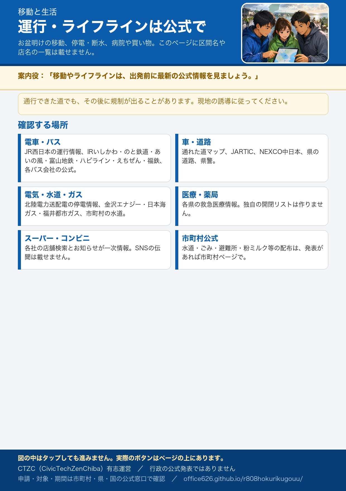

移動と生活
お盆明けに県内を移動する方、ライフラインや買い物で困っている方向けの公式への案内です。運行・通行止め・営業は刻々と変わります。このページに最新の区間名や店名の一覧は載せません。必ずリンク先で確認してください。
電車・バス
外房線・東金線など、土砂や冠水の影響が残る線区があります。代替手段も公式の案内が先です。
- JR東日本 列車運行情報（関東） 公式
- JR東日本 外房線 公式
- JR東日本（お知らせ・特急の案内） 公式
- 京成電鉄 公式
- 東武鉄道 公式
- 千葉都市モノレール 公式
- 千葉交通 公式
- 小湊鐵道（鉄道・バス） 公式
車・道路
通行実績がある道でも、その後に規制が出ることがあります。現地の規制と誘導に従ってください。
- トヨタ 通れた道マップ（災害時は直近の通行実績を表示。保証ではありません） 公式
- 日本道路交通情報センター（JARTIC） 公式
- NEXCO東日本（高速道路の通行止め・復旧） 公式
- ドラぷら（NEXCO東日本の道路情報） 公式
- 千葉県 道路環境課（県管理道路） 行政
- 千葉県警察（交通規制の発表は公式へ） 行政
- 国土交通省 道路の防災 行政
- 千葉県防災ポータル 行政
電気・水道・ガス
復旧の速さは事業者ごとに違います。断水・節水は市町村と水道事業の公式が先です。
- 東京電力パワーグリッド 停電情報 公式
- 同 千葉県（住所から検索） 公式
- 同 停電復旧情報（千葉県） 公式
- 千葉県企業局（水道） 行政
- 東京ガス 公式
- 京葉ガス 公式
- 大多喜ガス 公式
- お住まいの市町村公式（水道・ごみ・避難所）
医療機関・薬局
開いているかどうかは、県の検索と各機関の公式で確認してください。このサイトに独自の開閉リストは作りません。
- ちば救急医療ネット（医療機関を探す） 行政
- 千葉県 健康福祉部 行政
- 千葉県医師会 公式
- 千葉県薬剤師会 公式
- 厚生労働省 救急・災害医療 行政
- ウエルシア（店舗・お知らせ） 公式
- マツキヨココカラ（店舗検索） 公式
- スギ薬局 公式
- クリエイトSD 公式
スーパー・生活物資
個店の営業は各社の店舗検索・お知らせが一次情報です。SNSの伝聞は載せません。粉ミルクなどの配布は、市町村が発表した場合だけ市町村ページで確認してください。
- イオン（お知らせ・店舗） 公式
- カスミ 公式
- イトーヨーカドー 公式
- ヨークベニマル 公式
- ベルク 公式
- 西友 公式
- ローソン 災害時の店舗情報 公式
- セブン-イレブン 公式
- ファミリーマート 公式
住まいが被災した方の案内へ ／ 店舗・工場など、被災した事業者の方へ
